BLACK OS / ASISTENTE DE MOSTRADOR
De la receta a la mejor propuesta.
Leé la graduación, confirmá los datos y encontrá tres artículos para ofrecer con un motivo claro.
Receta original
Foto, imagen o PDF de una página.
Envía esta imagen a la función de Supabase de Black OS y a OpenAI para leer la letra manuscrita. Revisá cada valor antes de usarlo.
La IA propone una lectura. Cotejá signos, cilindros, ejes y distancia contra la receta antes de cotizar.
Verificá la graduación
Seleccioná el tipo de receta y revisá ambos ojos.
Copiá los valores de cerca tal como figuran. La ADD sugerida se calcula solo si ambos ojos son consistentes.
Ejemplo: −0,50 × 180° o −0,50*180° significa cilindro −0,50 y eje 180°.
03 / RECOMENDACIÓN COMERCIAL
Tres opciones para ofrecer
Compatibilidad primero. Después, una propuesta clara para el paciente.Otras alternativas compatibles en el catálogo
Si el paciente busca otra inversión, revisá estas fichas y sus precios en el sistema.
Primero verificá la graduación y confirmala. Después elegí el uso del paciente para buscar artículos en el catálogo de Black AI.
Compatibilidad orientativa según fichas cargadas. Confirmar laboratorio, diámetro, medidas, stock y precio vigente antes de cotizar.